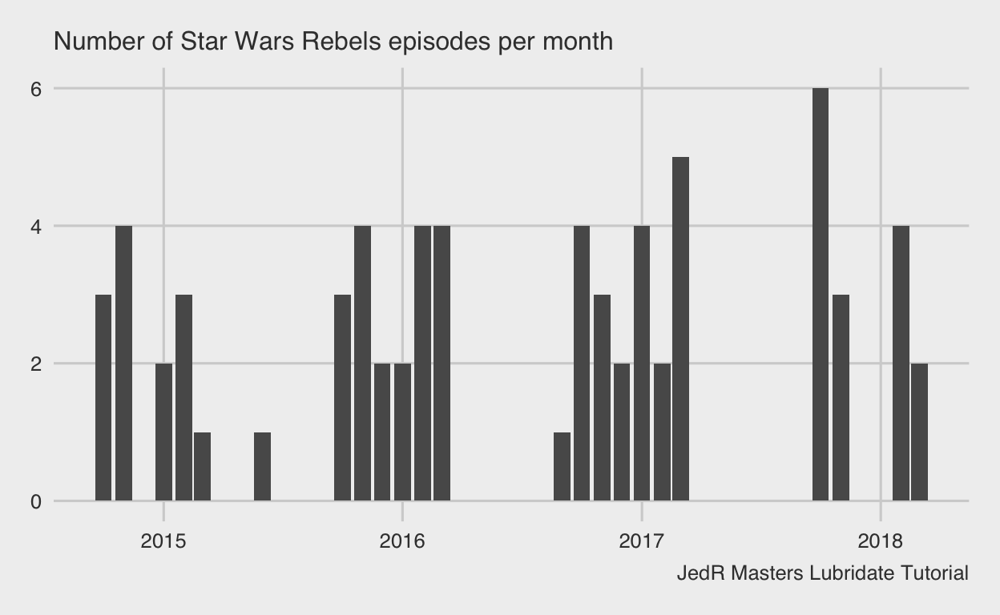

Tutorial by: Christian Staal Bruun Overgaard, JedR trainer
Introduction
Hello, young Padawan! In this tutorial we’ll look at how the
Lubridate package can make life easier when dealing with
dates in R. In doing so, we’ll examine a dataset, scraped from tvmaze.com,
with information about the Star Wars Rebels series. I encourage
you to follow along in your own R notebook! Good luck and may the force
be with you!
Import data
rebels_raw <- read_csv("https://github.com/utdata/jedr-training/blob/date-tutorial/data/starwarsrebels.csv?raw=true") # import data
rebels_raw |> head() # see what the data looks likeThis dataset has information about the Star Wars Rebels series. For each of the show’s 69 episodes, we have its episode number, air date, title, and season.
Note that some of the column names have spaces in them, which can
make life harder. To fix it, let’s use the clean_names()
function from the Janitor package:
rebels <- rebels_raw |> clean_names() # clean the names
rebels |> glimpse() # glimpse the "rebels" object## Rows: 69
## Columns: 4
## $ episode_number <dbl> 1, 2, 3, 4, 5, 6, 7, 8, 9, 10, 11, 12, 13, 14, 15, 1…
## $ original_air_date <chr> "13-Oct-14", "20-Oct-14", "27-Oct-14", "3-Nov-14", "…
## $ episode_title <chr> "Droids in Distress", "Fighter Flight", "Rise of the…
## $ season <dbl> 1, 1, 1, 1, 1, 1, 1, 1, 1, 1, 1, 1, 1, 2, 2, 2, 2, 2…Now, the column names are easier to work with.
Parsing dates: How to reconize dates in R
Notice that when we used the glimpse() above, we also
got info about the type of each column. The episode number and season
are read as dbl (“doubles, which is a number”), whereas the
episode title and air date are read as chr (“characters”).
To work effectively with dates, we need R to recognize when we’re
reading with dates. Do fix this, we can use lubridate’s parse
date functions. In this particular dataset, the dates are written in
the dmy (date-month-year) format. (If you look in the
glimpse() output above, you’ll see that the first
observation, for example, was: “13-Oct-14”). Let’s use
lubridate’s dmy() function to create a new
version of the dataset, called rebels_fix, which has a new
column called air_date_fixed:
rebels |>
mutate(air_date_fixed = dmy(original_air_date)) |>
glimpse()## Rows: 69
## Columns: 5
## $ episode_number <dbl> 1, 2, 3, 4, 5, 6, 7, 8, 9, 10, 11, 12, 13, 14, 15, 1…
## $ original_air_date <chr> "13-Oct-14", "20-Oct-14", "27-Oct-14", "3-Nov-14", "…
## $ episode_title <chr> "Droids in Distress", "Fighter Flight", "Rise of the…
## $ season <dbl> 1, 1, 1, 1, 1, 1, 1, 1, 1, 1, 1, 1, 1, 2, 2, 2, 2, 2…
## $ air_date_fixed <date> 2014-10-13, 2014-10-20, 2014-10-27, 2014-11-03, 201…Notice that, in the chunk above, we’re just looking at the output to
see that this worked as intented. See that the
air_date_fixed column is being read as a date
whereas the original_air_date column was read as a
character? Also, we’re not saving it into a new object
using the <- operator. Let’s use the <-
operator operator to save our work in a new object, called
rebels_cl, without the original_air_date
column, which we’re not going to need:
rebels_cl <- rebels |>
mutate(air_date_fixed = dmy(original_air_date)) |>
select(-original_air_date)
rebels_cl |> glimpse()## Rows: 69
## Columns: 4
## $ episode_number <dbl> 1, 2, 3, 4, 5, 6, 7, 8, 9, 10, 11, 12, 13, 14, 15, 16, …
## $ episode_title <chr> "Droids in Distress", "Fighter Flight", "Rise of the Ol…
## $ season <dbl> 1, 1, 1, 1, 1, 1, 1, 1, 1, 1, 1, 1, 1, 2, 2, 2, 2, 2, 2…
## $ air_date_fixed <date> 2014-10-13, 2014-10-20, 2014-10-27, 2014-11-03, 2014-1…Two key things to notice here:
air_date_fixedhas the formatdate.- In
air_date_fixed, the year is written first, followed by the month and then the day. That’s just what the date format looks like in R.
In this example, lubridate’s dmy() function
came in handy. Here are some other functions we might’ve used if the
dates had been formatted differently:
### when using the mdy function, R knows that the first value is month, followed by day, followed by year
mdy("May 15, 1988")## [1] "1988-05-15"### here, the ymd function makes it clear that the first value is year, followed by month, followed by day
ymd("1988-May-15")## [1] "1988-05-15"You can find more examples and tips in this cheatsheet.
Padawan practice: Parsing dates
Here’s a small portion of the data, called
parsing_practice_df, with three columns that need to be
parsed:
parsing_practice_dfEach column is currently written in the character format and should be converted to the date format. Can you figure out how to do this?
Practice: Parse date1
Hint: Replace the three lines, ___ with the
appropriate function.
parsing_practice_df |>
mutate(date1_cleaned = ___(date1))Here, as in the two following exercises, we’re not saving the output
but only displaying it. If we wanted to save it, we’d use the
<- operator. Okay, see if you can solve the two
following exercises, too!
Practice: Parse date2
parsing_practice_df |>
mutate(date2_cleaned = ___(date2))Practice: Parse date3
parsing_practice_df |>
mutate(date3_cleaned = ___(date3))Another way to parse dates
Base R also has a function to parse dates, called
as.Date(), which you can read more about here.
Working with dates
Let’s now make use of our newly created air_date_fixed
column to understand the data.
Which episodes were oldest or newest?
We can use the arrange() function to sort data frames
based on dates.
The oldest episodes
rebels_cl |>
arrange(air_date_fixed)The newest episodes
rebels_cl |>
arrange(desc(air_date_fixed)) # add "desc" to sort in descending orderOnly view episodes that aired before or after a given date
We can use the filter() function to only view episodes
that aired before or after a given date:
Episodes aired in 2018 (the last year available)
rebels_cl |>
filter(air_date_fixed >= "2018-01-01") #Notice that the date is written in quotes!Episodes that aired in February 2016
rebels_cl |>
filter(air_date_fixed >= "2016-02-01" & air_date_fixed < "2016-03-01")Padawan practice: using filter() with dates
Identify the episodes that aired in October 2017.
Hint: Use the filter() function to specify that you only
want to include episodes that aired on October 1, 2017 or later—and also
aired before November 1 the same year.
rebels_cl |>
filter() # fill out the filter function!Using specific parts of a date
Which month had the most episodes (throughout the entire period)?
To answer this question, we can use Lubridate’s
month() function, which allows us to focus only on months
(while ignoring years). It works like this:
rebels_cl_newcols <- rebels_cl |>
mutate(month = month(air_date_fixed))
rebels_cl_newcols |> glimpse()## Rows: 69
## Columns: 5
## $ episode_number <dbl> 1, 2, 3, 4, 5, 6, 7, 8, 9, 10, 11, 12, 13, 14, 15, 16, …
## $ episode_title <chr> "Droids in Distress", "Fighter Flight", "Rise of the Ol…
## $ season <dbl> 1, 1, 1, 1, 1, 1, 1, 1, 1, 1, 1, 1, 1, 2, 2, 2, 2, 2, 2…
## $ air_date_fixed <date> 2014-10-13, 2014-10-20, 2014-10-27, 2014-11-03, 2014-1…
## $ month <dbl> 10, 10, 10, 11, 11, 11, 11, 1, 1, 2, 2, 2, 3, 6, 10, 10…Here, we’re creating a new dataframe called
rebels_cl_newcols. We’ll use this to add more columns later
on.
It’s worth keeping in mind that “month” is now the name of a column
(which we just created) and the name of a function from the
lubridate package. That can be a bit confusing and it’s
generally best to avoid creating object with the same names as
functions.
Also, see how the newly created month column only has
information about which month the episodes aired in, in this case “10”
(October) for the first three observations and “11” (November) for the
next four observations. If we wanted the names of the months, we can use
the label = TRUE argument within the month function. Like
this:
rebels_cl_newcols <- rebels_cl_newcols |>
mutate(month = month(air_date_fixed, label = TRUE))
rebels_cl_newcols |> glimpse()## Rows: 69
## Columns: 5
## $ episode_number <dbl> 1, 2, 3, 4, 5, 6, 7, 8, 9, 10, 11, 12, 13, 14, 15, 16, …
## $ episode_title <chr> "Droids in Distress", "Fighter Flight", "Rise of the Ol…
## $ season <dbl> 1, 1, 1, 1, 1, 1, 1, 1, 1, 1, 1, 1, 1, 2, 2, 2, 2, 2, 2…
## $ air_date_fixed <date> 2014-10-13, 2014-10-20, 2014-10-27, 2014-11-03, 2014-1…
## $ month <ord> Oct, Oct, Oct, Nov, Nov, Nov, Nov, Jan, Jan, Feb, Feb, …Notice that the type for month is “ord”? This means that the column is written as an “ordered factor”, which simply means (in this case) that although it looks like text, it would be ordered by time, not alphabetically. In other words, we can sort by the month column, if we want to do so:
rebels_cl_newcols |>
select(episode_title, month) |>
arrange(month)See how it’s arranged by month?
Going back to our question about which month had the most episodes, let’s take a look:
rebels_cl_newcols |>
count(month, name = "number_of_episodes") |>
arrange(desc(number_of_episodes) )It looks like there were lot’s of new episodes in October, November, February, and March.
As a quick aside, when we do the month labels, we can also get R to write out the full month rather than the abbreviation. Let’s look at an example:
month("2022-05-04", label = TRUE, abbr = FALSE)## [1] May
## 12 Levels: January < February < March < April < May < June < ... < DecemberThe abbr argument defaults to TRUE, so if we don’t
specific abbr = FALSE, we’d get the abbreviated version as
we saw above.
Padawan practice: using the year() function
To get information about specific years, we can use the
year() function, which is quite similar. Try to create a
variable called year see we can check how many episodes
aired in each year.
Hint: you’ll need to use the air_date_fixed column.
### USE THE year() FUNCTION HERE TO CREATE A NEW VARIABLE CALLED "year"
rebels_cl_newcols <- rebels_cl_newcols |>
mutate( )
### finding number of episodes per year (you don't need to change the code below)
rebels_cl_newcols |>
group_by(year) |>
count(name = "number_of_episodes") |>
arrange(desc(number_of_episodes) )Floor_date()
An alternative would be to use Lubridate’s
floor_date()-function, which let’s us round date-time
objects down to their nearest year, month, week, day, etc. It
works like this:
rebels_cl_newcols |>
mutate( #use the mutate function to create a new column
month_floor = #set the new column name to
floor_date(air_date_fixed, #use the round_date function on our existing date varible
"month")) |> #we want to round to nearest month
select(episode_title, month_floor) |> #we only want to view these columns now
head(10) #print just the ten first rowsNotice that the new column, month_floor, only include dates that are the first day in any given month?
Rounding the dates to their nearest year/month/week/day/etc can be
helpful later on, for example when visualizing the data. Instead of
round to the nearest values, we can use ceiling_date() to
round up to the nearest value or round_date() to round to
the closest value. In this tutorial we’ll mostly focus on
floor_date() but as a future JedR Master, you should know
about the other options, too!
Okay, let’s create a dataframe with four new columns, rounded by
floor_date(). We’ll use this later on.
rebels_rounded_cols <- rebels_cl_newcols |>
mutate(year_fl = floor_date(air_date_fixed, "year")) |>
mutate(month_fl = floor_date(air_date_fixed, "month")) |>
mutate(week_fl = floor_date(air_date_fixed, "week")) |>
mutate(day_fl = floor_date(air_date_fixed, "day"))
rebels_rounded_cols |> select(episode_title, year_fl, month_fl, week_fl, day_fl) |> glimpse()## Rows: 69
## Columns: 5
## $ episode_title <chr> "Droids in Distress", "Fighter Flight", "Rise of the Old…
## $ year_fl <date> 2014-01-01, 2014-01-01, 2014-01-01, 2014-01-01, 2014-01…
## $ month_fl <date> 2014-10-01, 2014-10-01, 2014-10-01, 2014-11-01, 2014-11…
## $ week_fl <date> 2014-10-12, 2014-10-19, 2014-10-26, 2014-11-02, 2014-11…
## $ day_fl <date> 2014-10-13, 2014-10-20, 2014-10-27, 2014-11-03, 2014-11…The yday() function
What if we wanted to find the earliest date within a year that an
episode aired? For that purpose, we could use the yday()
(year day) function, which simply tells us how many days into a year a
given date is. My son and I share the same birthday (February 5). That’s
the 36th day of the year:
yday("2022-02-05")## [1] 36To find the earliest episode airdate for each year, we could do this:
rebels_rounded_cols |>
mutate(
dy = yday(air_date_fixed),
year = year(air_date_fixed)) |>
group_by(year) |>
slice_min(air_date_fixed) |>
ungroup() |>
select(episode_title, season, air_date_fixed, year, dy)This shows the first-aired episode for each of the years from 2014–2018. Notice the few doppelgängers? It looks like seasons 3 and 4 started each started with a double episode.
There are few things going on in the chunk above. Here’s a quick recap of what each line does:
- We start with our object,
rebels_rounded_cols, and then … - We use
mutate()to create a new column calleddy… - To get the
dycolumn to specify each dates number within a year, we useyday(), and then … - We
group_by()because we want the earliest episode within each year, and then … - We use
slice_min()to get just the earliest episode within each year. (Otherwise, our output would all the episodes.) And then … - We use
ungroup()to remove the groupeddycolumn. Not essential here but might be handy if you need to perform additional operations. And then … select()let’s us show just a few columns to make the output more readable at a glance.
Plotting with dates
When working with dates it can be super useful to plot your date.
This can show how things are changing over time. Let’s look at a quick
example. Remember above where we used floor_date() to round
all dates down to their nearest month? We can use that column to plot
how many episodes that aired per month throughout the entire period.
First, let’s get the data into a more handy format.
rebels_gs <- rebels_rounded_cols |>
group_by(month_fl) |>
summarise(no_episodes = n())
rebels_gs |> head() #let's see what this new dataframe looks likeA quick rundown of what’s happening above:
- We’re grouping by month_fl. This is because we’re interested in the number of episodes per month. We could also have used year_fl, week_fl, or day_fl here.
- Then we’re using the summarise function to simply count the number of episodes per month.
- We’re storing this in a new dataframe,
rebels_gs, which we’ll use below.
With that taken care of, here’s an example of how we could use
ggplot to visualize it:
ggplot(rebels_gs, aes(x = month_fl, y = no_episodes)) +
geom_bar(stat='identity') +
labs(
subtitle = "Number of Star Wars Rebels episodes per month",
caption = "JedR Masters Lubridate Tutorial") +
ggthemes::theme_fivethirtyeight()
Here’s a quick explanation of what’s happening in the chunk above:
- In the first line, we’re specifying the dataset (“rebels_gs”, x-variable (“month_fl”), and y-variable (“no_episodes”)
- In the second line, we’re using
geom_bar()to tell R to make a bar chart. We use the “stat = ‘identity’” arugment to clarify that we’ll be providing the values for the bars - In the third portion, we’re using
labs()to create the title and caption. We’re using “subtitle” rather than “title” b/c it works better with the theme we’re using - In the fourth and final portion, we’re employing
theme_fivethirtyeight()from theggthemespackage.
The end
That’s it for now, young Padawan! Good luck on your next quest, stay safe, and may the force be with you! 💪